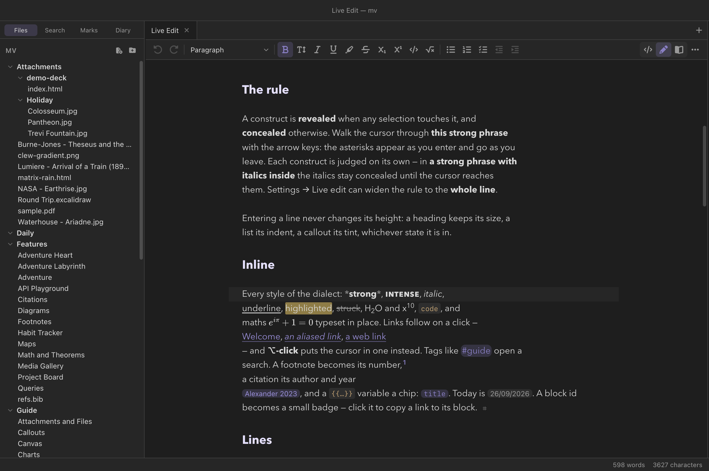
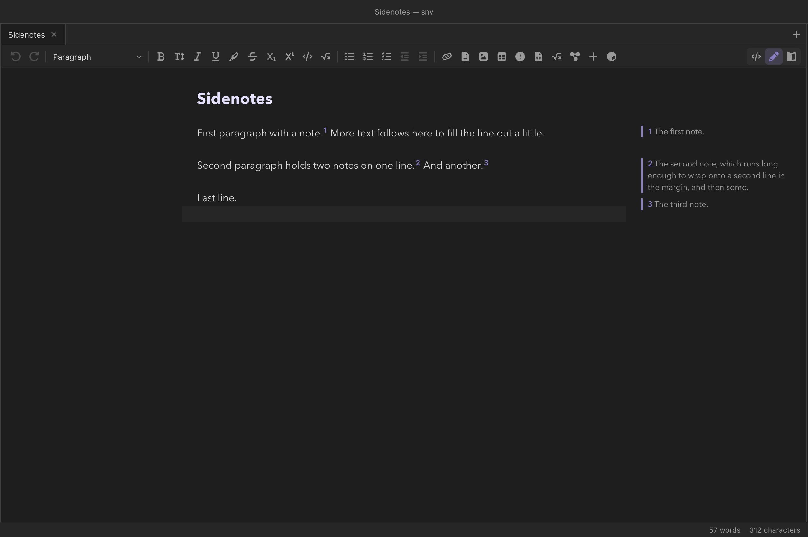
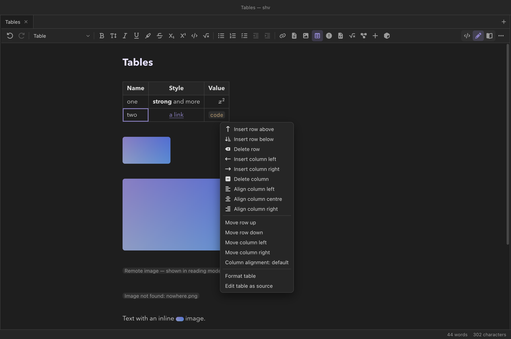
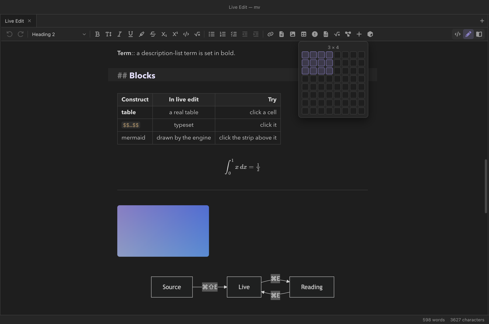
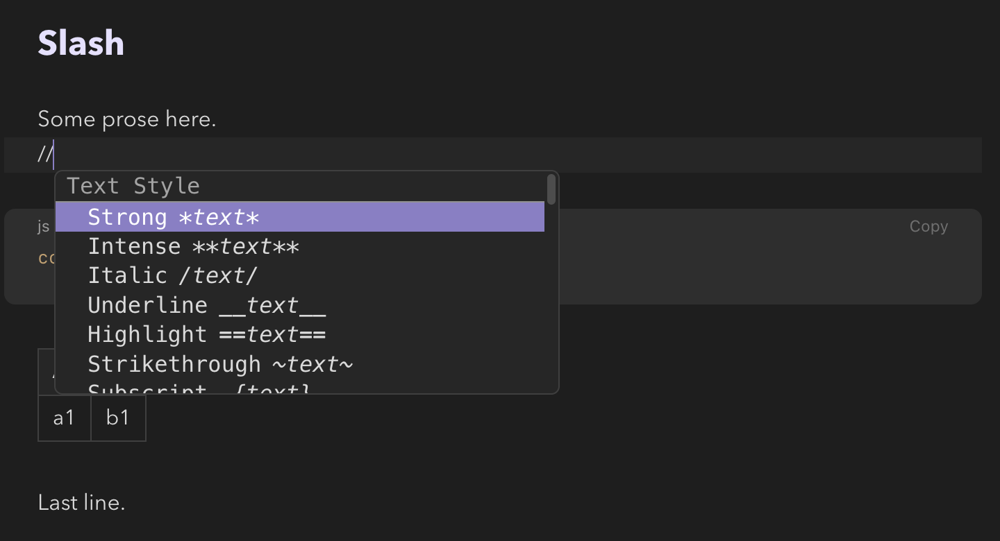

Writing
Live edit and the toolbar
Live edit is the editor with the markup put away. Headings look like headings, maths is typeset, a table is a table and a mermaid fence is its diagram — until the cursor touches something, at which point that one construct shows its source again, exactly as source mode would. Nothing about the file changes: live edit is source mode wearing a costume, and every keystroke lands in the same editor with the same undo history. Obsidian calls this Live Preview.

*strong*, so its asterisks show and the toolbar's
Strong button is pressed; everything else is concealed.Three modes
Every note tab is in one of three modes: source (the Markdown as written), live edit, and reading (the rendered page). ⌘⇧E flips a tab between source and live edit. ⌘E still toggles reading mode — and coming back, it returns to whichever editing mode the tab last used, so a tab you write in live stays live across a look at the rendered page, and across a restart. The View menu's Mode submenu and the switch at the right end of each pane's tab strip reach all three directly (in 0.12.0 the switch was at the end of the toolbar); ⌘-click in reading mode (inverse search) lands in the tab's editing mode too.
New tabs open in source mode unless you change New note tabs open in, and ⌘E returns from reading mode to decides where a tab that has never been edited goes (both in Settings → Appearance and Settings → Live edit). Source and live edit are one editor underneath: flipping between them is instant and loses nothing.
The reveal rule
A construct is revealed when any selection touches it — a cursor
beside it counts — and concealed otherwise. Walk the cursor
through *a phrase* with the arrow keys and the asterisks
appear as you arrive and go as you leave. Each construct is judged on its
own: in *a phrase with /italics/ inside*, the italics stay
concealed until the cursor reaches them.
- Inline constructs reveal when the cursor touches them.
- Line constructs — a heading's
#s, a list marker, a quote's>, a callout's[!type]— reveal when the cursor is anywhere on their line. - Blocks — display maths, a table, a diagram, the properties — reveal when the cursor is anywhere inside them.
- A directive or environment reveals only on its opening and closing lines; its body is ordinary Markdown, so typing in it keeps the frame around it.
Settings → Live edit → Reveal syntax for can widen the rule to the whole line. Whichever state a line is in, entering it never changes its height: a heading keeps its size, a list its indent, a callout its tint.
What renders in place
Inline
Every style of the dialect — *strong*,
**intense**, /italic/,
__underline__, ==highlight==,
~strike~, H_2O and x^{10},
`code` — shows styled with its delimiters hidden. Inline
maths is typeset in place by MathJax in the app window. A footnote —
one line or several paragraphs, lists and maths included — becomes its
number (hover it to read the note's first paragraph; click it to open the
whole note). On a wide pane its first paragraph also sits in the margin
beside it (sidenotes); a \cite{…}
becomes a chip reading the citation exactly as reading mode formats it
(Citations; in 0.12.0, a plain
Author Year); a {{variable}}, a
@label[…], :today and a ^block-id
become small chips; an @ref[…] shows the number it will print. A :TeX[…] span is shown dimmed — it
renders only in a LaTeX export. The bracket of a directive the engine
takes literally — @reveal[…], @image[…],
@label[…] and @ref[…], the figure and
TeX environments — reads exactly as written while the cursor
is in it, so every slash of a URL stays a slash; a directive whose text
the engine formats, such as @note[…], still formats. (In
0.12.0 a URL there lost its slashes to italics while you edited it.)
Under the vault's standard Markdown switch,
live edit reads *x* and **x** the standard way,
as the engine does.
Clicking
- A concealed link —
[[wikilink]],[text](url),<url>— follows on a click (⌘-click for a new tab). ⌥-click puts the cursor in it instead, to edit it. An unresolved wikilink is drawn dimmed and dashed. Resting the pointer on a link previews it (link previews). - A cross-reference —
@ref[key],@cref,@Cref— shows the number the rendered note will print; a click jumps to its label (⌘[ returns), and hovering previews it (cross-references). - A citation chip opens its entry in the Refs panel's library; hovering it shows the reference.
- A tag opens the search panel on that tag.
- A task's checkbox ticks it — the
[x]is written to the file like any keystroke. - A block-id badge copies a link to its block.
- A table cell is edited in place (Tables); ⌥-click shows the table's source at that cell.
- Anything else rendered — maths, a footnote number, a citation chip, a diagram's edge strip — puts the cursor there, revealing the source.
Lines
Headings take their size; bullets become bullets (nested ones differ);
tasks become checkboxes; numbered items keep their numbers; quotes keep a
bar; callouts are drawn as reading mode
draws them — tint, icon, rounded box, padding, list numbers inside the
box — and a foldable one (+ or -) folds and
unfolds from the chevron at the right of its title (in 0.12.0 the box is
plainer, and its list numbers hang over the border) — which changes only how
you are looking at the note, not the file: the +/-
is where it starts. >> text << centres and
>> text right-aligns. A code fence keeps its source,
highlighted, with its fence lines turned into a language label and a
Copy button. A :::name block or
@begin(name) environment becomes a captioned frame;
:::TeX and :::comment bodies are dimmed.
Blocks
Display maths, a horizontal rule, {{TOC}} (click an entry to
go there), images (sized as ![[image.png|300]] asks) and
tables (edited in place) are drawn by the editor
itself. The properties at the top of
a note become rows you can edit in place — text, numbers, dates and
checkboxes — written back through the editor, so ⌘Z undoes
them; Edit as YAML shows the source.
Everything else the engine draws — mermaid and the
TeX figures, maps,
queries, Dataview and Bases, note and PDF
embeds, canvases, media, @reveal,
tabbing — is rendered by the engine
into a small frame in the note, exactly what reading mode shows, refusals
included. Click the thin strip above a frame to edit its source. A frame
re-renders when a file it reads changes (an embedded note, the notes a
query lists) and when a setting that changes rendering does.
A frame renders under the citation settings in the header of the note
you are editing — its Bibliography, style and the rest of
the citation keys, and nothing else from
the header — so a \cite in an embedded note resolves as it
does in reading mode, and changing those keys re-renders the frames.
While the cursor is inside a formula or a diagram its source shows, and a pane beside it shows what that source renders to, updated as you pause — see the live rendering. The arrow keys walk into a drawn block — a formula, a diagram, a table — rather than jumping over it.

Tables

A table stays a table while you edit it. Click a cell and type: the text
goes into the note as you write, the table stays drawn, and
⌘Z undoes it with the rest of the note's history.
Tab and ⇧Tab move between cells (across rows),
Enter moves down a column, and either adds a row when you go
past the end. The arrow keys leave a cell at its edges, and the table at
its top and bottom. ⇧Enter breaks a line inside a cell (written
<br>, since a Markdown cell is one line), and a
| you type is written \|, so it cannot split the
cell — including the one in a wikilink's alias.
The toolbar's Table group, and a right-click on any cell, insert and delete rows and columns, move them, and set a column's alignment. While you type, the pipes in the source are left where they fall; when you leave the table they are lined up again, in one step you can undo on its own. Esc, ⌥-click on a cell, or Edit table as source shows the Markdown, with the cursor where it was.
Tables without a header are edited the same way. The engine accepts two forms GFM does not: rows of pipes with no separator line at all, and a separator line first (which sets the columns' alignment) followed by the rows. Neither has a header row, so every row is an ordinary row you can delete or move. Setting a column's alignment on a table of bare pipe rows adds a separator line at its top — the separator-first form, still without a header.
| Apples | 12 | | :--- | ---: |
| Bananas | 8 | | Apples | 12 |
| Bananas | 8 |
A table using the engine's extended syntax — merged cells
(| a || b |, or a cell ending in ^) or column
widths (|---30%---|) — is drawn but edited as source (a line
above it says so): lining its pipes up would undo the merges. So is a table
larger than 200 rows or 40 columns. Formatting inside a cell is limited to
inline styles and links; a heading or a list cannot live in one.
The toolbar

In live edit a toolbar sits above the note: undo and redo; the
block style (paragraph, heading, quote, list, code…, and
it names the block the cursor is in); the text styles,
labelled with what they write — Strong — *text* in this dialect,
Bold — **text** under standard Markdown; lists
with indent and outdent; insert — a link form, a
wikilink, an attachment, and small popovers for a table (pick its size on
a grid), a callout (every type, your own included, foldable or not), a code block (search
the language), maths, a diagram (with its show= choice), and
the Format menu's inserts and blocks; and table tools while the cursor
is in a table. The mode switch is not on it: it sits in the
tab strip.
- A style under the cursor shows as pressed, and
pressing it again removes it — the cursor only has to be inside
*word*, not around it. - The toolbar never takes the cursor away: clicking a button leaves your selection where it was.
- When the pane is too narrow for one row, the toolbar wraps onto a second, keeping its order; only when two rows are not enough do the lowest-priority groups move into a … menu. The table tools never add a row of their own: they take their place in the rows there are, ahead of undo and redo — which go into … first to make room — and go into … themselves only when there is still none. In a very short window the toolbar stays on one row.
- ⌥⇧T puts the keyboard in the toolbar; the arrows move in the order you see, ↑ and ↓ cross to the other row, Enter activates, Esc returns to the note. Where no toolbar shows — reading mode, or the toolbar hidden — it lands on the pane's mode switch instead.
- Select some text and a smaller bubble offers the text styles and links over the selection (Settings → Editor toolbar can turn it off).
- There is no other bar above a note: reading mode, and source mode by default, start right under the tab strip. (In 0.12.0 reading mode had a slim bar above the page holding the mode switch.)
Every button is a command, so everything on the toolbar is also in the command palette and can be given a hotkey — and a plugin can add its own button. Settings → Editor toolbar decides when it shows (live edit only, also in source mode, or never — View → Editor Toolbar toggles it), and which groups it holds, in what order.
The // menu

Type // at the start of a line, or after a space, and the
Format menu drops down at the cursor, section by section, each item showing
the syntax it writes. Keep typing to filter it — //head 2
narrows it to Heading 2 — and press Enter to apply:
the slashes and what you typed disappear and the item runs, exactly as if
you had chosen it from the Format menu. Esc closes the menu and
leaves the slashes as text.
It is Obsidian's slash menu with one more slash, because in this dialect a
single slash starts an italic (/text/); two slashes never can.
It stays out of the way where // is ordinary text: in a URL
(https://), in the middle of a word, when a space follows the
slashes (// a comment), and inside code, maths or the
metadata header. It works in source mode as well, and in a table cell,
where it offers only the inline styles and inserts. Settings → Editor
toolbar turns it off.
What live edit does not do
- Macros are shared across notes. MathJax in the app
window keeps
\newcommanddefinitions for the session, so a macro one note defines is visible in another opened later. Reading mode is the truth for macros. - In a table, you edit one cell at a time: a selection cannot span cells, and pasting a grid does not fill several cells.
- A
|liveoffice embed shows as its thumbnail; the live LibreOffice editor opens in reading mode. - Remote (
https://) images are not loaded in the editor — a chip says so; reading mode shows them. - Meta Bind
INPUT[…]/VIEW[…]in prose are shown as written (the fenced forms render in a frame). - Documents over 500 KB are shown in source mode, with a line saying so; the tab stays in live edit, so a smaller revision turns it back on.
Reference
| What | How |
|---|---|
| Toggle live edit / source | ⌘⇧E, View → Live Edit |
| Toggle reading mode | ⌘E (returns to the tab's editing mode) |
| Any of the three modes | View → Mode, the mode switch in the tab strip, the palette |
| Preview a link | Rest the pointer on it (link previews) |
| Follow a concealed link / edit it | Click / ⌥-click |
| Edit a table cell / the table's source | Click / Esc or ⌥-click |
| Next / previous cell; down a column | Tab / ⇧Tab; Enter (adds a row at the end) |
| A line break in a cell | ⇧Enter |
| Rows, columns, alignment | The toolbar's Table group, or right-click a cell |
| Tick the task on the cursor's line | ⌘Enter (elsewhere: a blank line below) |
| Indent / outdent a list item | Tab / ⇧Tab |
| The Format menu at the cursor | Type // at a line start or after a space; Enter applies, Esc keeps the slashes |
| Into the toolbar | ⌥⇧T; Esc back |
| Show or hide the toolbar | View → Editor Toolbar |
| Settings | Settings → Live edit, Settings → Editor toolbar (every key) |
See also
- The editor — source mode, completions, and the Format menu the toolbar shares.
- How rendering works — what the frames show.
- The jmarkdown dialect — what each construct means.
- Settings and hotkeys.